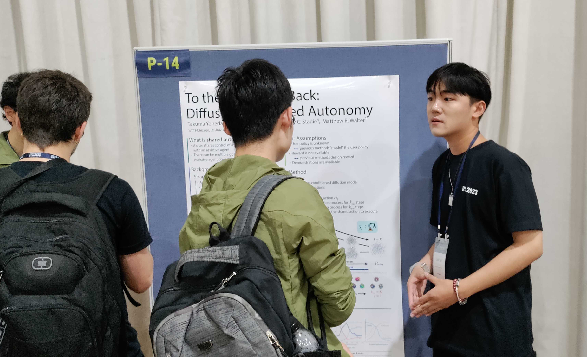

- 


Luzhe Sun(孙鲁喆)
Ph.D. Student @ Toyota Technological Institute at
Chicago
MCS @ University of
Chicago
BEng @ Xiamen
University (Graduates With Honor)
Email: luzhesun@ttic.edu / luzhesun@uchicago.edu
Interest: Robotics Perception Algorithm, diffusion model, Graph Theory
Currently I am a PhD Student at TTIC
Robot Intelligence
through Perception Lab
supervised by Professor Matthew Walter
Biography
I'm Luzhe Sun, a first-year Ph.D. student at TTIC. My research focuses on Robotics Planning and Diffusion Model. Prior to joining TTIC, I completed my Masters Program in Computer Science at the University of Chicago. I studied at the School of Information Science at Xiamen University as an undergraduate, where I conducted research on graph theory with Professor Zhihong Zhang.
In my free time, I really enjoy photography and painting Chinese paintings. I also play the erhu, but not as distinguished as painting.
Service and Volunteer
-
Invited Demo at 2023 Robot Block Party in Griffin Museum of Science , Chicago, IL.
-
Invited Demo at 2024 Robot Block Party in Griffin Museum of Science , Chicago, IL.
-
Volunteer of Midwest Robotics Workshop TTIC, Chicago, IL.
-
Organizer of Multimodal Artificial Intelligence Workshop TTIC, Chicago, IL.
Awards and Honors
-
Xiamen University Outstanding Student Worker Scholarship 2018.
Xiamen University. China. -
Xiamen University "Xilie Huang" Annual Scholarship (2/200) 2018.
Xiamen University. China. -
National Third Prize of China Students Service Outsourcing competition. 2018.
Ministry of Education of the People's Republic of China, Ministry of Commerce of the People's Republic of China, China. -
National Second Prize of Contemporary Undergraduate Mathematical Contest in Modeling. 2019.
China Society for Industrial and Applied Mathematics, China. -
China National Scholarship (Highest scholarship given by Chinese government Top 0.1%) 2019.
Chinese Ministry of Education. China. -
China National Scholarship (Highest scholarship given by Chinese government Top 0.1%) 2020.
Chinese Ministry of Education. China. -
Honored Graduates Student, 2021.
Xiamen University. China
Research
Using diffusion model to correct user input, thus achieving shared-autonomy. This model aims to help user finish hard operations swiftly and stably. User intent is preserved by controlling the number of diffusion steps in the diffusion model. The experiment is successful on hard control problems like the LunarLander and Block Push environment.
Using the diffusion model to predict the trajectory of the manipulator. At the same time explored the properties of the diffusion model on trajectory stitching and conditional sampling to achieve trajectory inpainting. The experiment was simulated in Maze2D and Ravens environment.
Projects
We implemented the Code as Policies algorithm on the UR5 robot. The robot is able to respond to the user’s voice command and execute the corresponding task. The project was presented during the 2023 National Robotics Week at the Museum of Science and Industry in Chicago, and at the University of Chicago for the 2023 South Side Science Festival.
With the economic development and the improvement of living standards, people's demand for spiritual culture has further increased. Tourism has become people's basic way of life and one of the best choices for people to use leisure time. In recent years, the booming transnational free travel has gradually entered the scope of public acceptance. The accompanying problem is that there are inconveniences in tourism, accommodation consumption and other fields due to the relationship of language. The "Self-Travel Assistant" APP is designed based on this situation and is an auxiliary application for tourists from China and Japan to travel independently. Using modern AI technology to assist tourists, provide and recommend information on local attractions, restaurants, accommodation, transportation, etc.